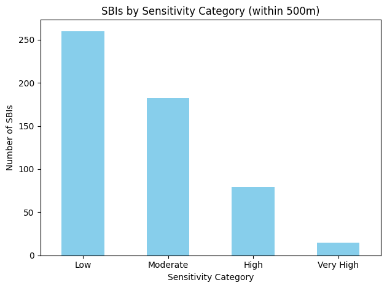
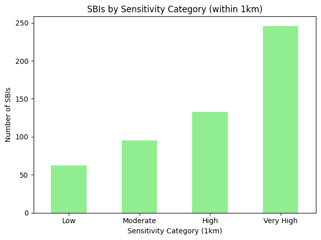

Heuristic Modification#
An important component to our analysis is to see what happens to the results when we modify the chosen heuristic.
import geopandas as gpd
import pandas as pd
# Load and join GMCA housing, industrial and office supply data
housing_supply_gdf = gpd.read_file("data/gmca_data/2024 GM Housing Land Supply GIS.shp")
industrial_supply_gdf = gpd.read_file("data/gmca_data/2024 GM Industrial-warehousing Land Supply GIS.shp")
offices_supply_gdf = gpd.read_file("data/gmca_data/2024 GM Offices Land Supply GIS.shp")
total_supply_gdf = pd.concat([housing_supply_gdf, industrial_supply_gdf, offices_supply_gdf])
# Load and tidy GMEU Sites of Biological Importance data
sbi_gdf = gpd.read_file("data/gmeu_data/gm_sbi.shp")
sbi_gdf["Category"] = "Site of Biological Importance"
sbi_gdf = sbi_gdf.rename(columns = {"district": "LAName", "site_nam": "SiteRef"})
# Join GMCA and GMEU data
full_data_gdf = pd.concat([total_supply_gdf, sbi_gdf[["SiteRef", "LAName", "Category", "geometry"]]])
# Calculate the centroid of each site for distance calculations
full_data_gdf["centroid"] = full_data_gdf.centroid
# Split the data into SBIs and non-SBIs
SBIs = full_data_gdf[full_data_gdf["Category"] == "Site of Biological Importance"]
non_SBIs = full_data_gdf[full_data_gdf["Category"] != "Site of Biological Importance"]
# Loop through each SBI, calculate the distance from its centroid to all non-SBI centroids, and count how many are within 500m
from shapely.geometry import Point
# Ensure both SBIs and non_SBIs have a 'centroid' column of Point geometries
sbi_centroids = SBIs['centroid']
non_sbi_centroids = non_SBIs['centroid']
# Calculate for each SBI how many non-SBIs are within 500m
within_500m_counts = []
for sbi_idx, sbi_centroid in sbi_centroids.items():
count = non_sbi_centroids.distance(sbi_centroid).lt(500).sum()
within_500m_counts.append(count)
import pandas as pd
# Convert the results to a pandas Series for better display
within_500m_series = pd.Series(within_500m_counts, name="Non-SBIs within 500m")
# Example bin edges and labels
bins = [-1, 0, 2, 5, float('inf')]
labels = ['Low', 'Moderate', 'High', 'Very High']
# Create a DataFrame with the counts
sensitivity_df = pd.DataFrame({
"Non-SBIs within 500m": within_500m_counts
})
# Bin the counts into sensitivity categories
sensitivity_df["Sensitivity"] = pd.cut(
sensitivity_df["Non-SBIs within 500m"],
bins=bins,
labels=labels
)
sensitivity_df
| Non-SBIs within 500m | Sensitivity | |
|---|---|---|
| 0 | 0 | Low |
| 1 | 0 | Low |
| 2 | 1 | Moderate |
| 3 | 0 | Low |
| 4 | 0 | Low |
| ... | ... | ... |
| 531 | 2 | Moderate |
| 532 | 0 | Low |
| 533 | 2 | Moderate |
| 534 | 0 | Low |
| 535 | 1 | Moderate |
536 rows × 2 columns
import matplotlib.pyplot as plt
# Count SBIs in each sensitivity category
category_counts = sensitivity_df["Sensitivity"].value_counts().sort_index()
# Plot as a bar chart
category_counts.plot(kind='bar', color='skyblue')
plt.xlabel('Sensitivity Category')
plt.ylabel('Number of SBIs')
plt.title('SBIs by Sensitivity Category (within 500m)')
plt.xticks(rotation=0)
plt.tight_layout()
plt.show()

# Calculate for each SBI how many non-SBIs are within 1 km (1000 meters)
within_1km_counts = []
for sbi_idx, sbi_centroid in sbi_centroids.items():
count = non_sbi_centroids.distance(sbi_centroid).lt(1000).sum()
within_1km_counts.append(count)
# Create a DataFrame and bin the results (adjust bins/labels as needed)
bins_1km = [-1, 0, 2, 5, float('inf')]
labels_1km = ['Low', 'Moderate', 'High', 'Very High']
sensitivity_1km_df = pd.DataFrame({
"Non-SBIs within 1km": within_1km_counts
})
sensitivity_1km_df["Sensitivity"] = pd.cut(
sensitivity_1km_df["Non-SBIs within 1km"],
bins=bins_1km,
labels=labels_1km
)
sensitivity_1km_df
| Non-SBIs within 1km | Sensitivity | |
|---|---|---|
| 0 | 0 | Low |
| 1 | 1 | Moderate |
| 2 | 3 | High |
| 3 | 6 | Very High |
| 4 | 1 | Moderate |
| ... | ... | ... |
| 531 | 8 | Very High |
| 532 | 2 | Moderate |
| 533 | 7 | Very High |
| 534 | 10 | Very High |
| 535 | 11 | Very High |
536 rows × 2 columns
# Count SBIs in each 1km sensitivity category
category_counts_1km = sensitivity_1km_df["Sensitivity"].value_counts().sort_index()
# Plot as a bar chart
category_counts_1km.plot(kind='bar', color='lightgreen')
plt.xlabel('Sensitivity Category (1km)')
plt.ylabel('Number of SBIs')
plt.title('SBIs by Sensitivity Category (within 1km)')
plt.xticks(rotation=0)
plt.tight_layout()
plt.show()
